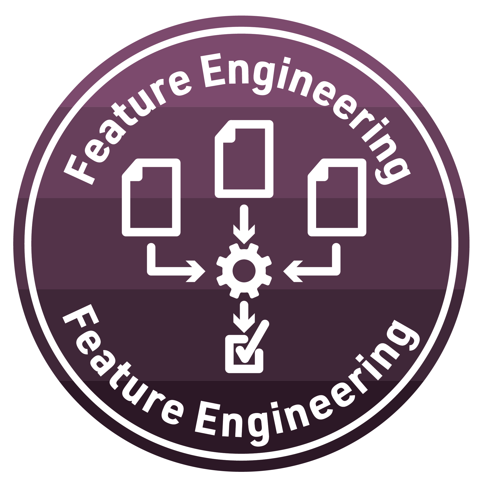

Feature Engineering Activity Types
Badge
Part I: Reflect and Plan
Part A:
Which features are most relevant to your work? For each, briefly explain why.
Which feature engineering steps are necessary to include those in a model?
Part B: Once again, use the institutional library (e.g. NCSU Library), Google Scholar or search engine to locate a research article, presentation, or resource that applies machine learning to an educational context aligned with your research interests. More specifically, please find an article in your field that utilizes in feature engineering
Provide an APA citation for your selected study.
What is the data source used in the study?
Why was feature engineering useful or even necessary in this study?
Part II: Data Product
For this data product, please add a feature (or several features) specific to one or more of the activity types in the OULAD interactions data, and then add these features to your model and evaluate the accuracy. How did the accuracy appreciably change–if at all? Please copy all of your code in one or more code chunks below.
Reach: Consider changing your model from a random forest to a boosted tree, which can be even more performant (in terms of predictions) than random forests.
Knit and Publish
Complete the following steps to knit and publish your work:
First, change the name of the
author:in the YAML header at the very top of this document to your name. The YAML header controls the style and feel for knitted document but doesn’t actually display in the final output.Next, click the knit button in the toolbar above to “knit” your R Markdown document to a HTML file that will be saved in your R Project folder. You should see a formatted webpage appear in your Viewer tab in the lower right pan or in a new browser window. Let’s us know if you run into any issues with knitting.
Finally, publish your webpage on Posit Cloud by clicking the “Publish” button located in the Viewer Pane after you knit your document. See screenshot below.

Receiving Your Machine Learning Badge
To receive credit for this assignment and earn your third ML badge, share the link to published webpage under the next incomplete badge artifact column on the 2023 LASER Scholar Information and Documents spreadsheet: https://go.ncsu.edu/laser-sheet.
Once your instructor has checked your link, you will be provided a physical version of the badge below!
